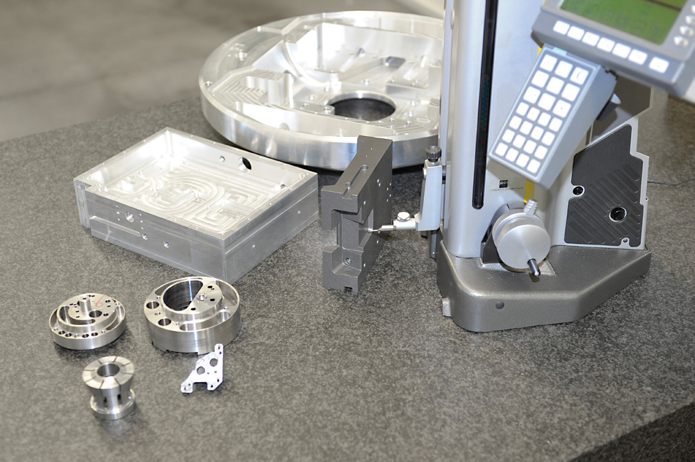

⚙️
CNC-Fräsen
5-Achs-Simultanbearbeitung für anspruchsvolle Konturen und enge Toleranzen.
Präzisionsfertigung mit klarem Schwerpunkt: Fräsen. Ergänzt um Erodieren und abgestimmte Folgeprozesse – für einbaufertige Bauteile in Losgrößen von 10 bis 50.
Das Fräsen steht bei uns im Vordergrund. Auf unserer 5-Achs-Maschine bearbeiten wir komplexe Werkstücke in einer Aufspannung – mit Fräswegen bis 1.400 mm in X, bis 800 mm in Y und bis 650 mm in Z.

5-Achs-Simultanbearbeitung für anspruchsvolle Konturen und enge Toleranzen.
Draht- und Senkerodieren für feinste Geometrien und harte Werkstoffe.
Teilautomatisiert für kurze Durchlaufzeiten und reproduzierbare Serien.
Beschichten und Veredeln mit spezialisierten Kooperationspartnern.
Härten und Vergüten für die geforderten Werkstoffeigenschaften.
Vom Einzelstück bis zur wiederkehrenden Losgröße – flexibel und zuverlässig.
Senden Sie uns Ihre Zeichnung oder 3D-Daten – wir beraten Sie zu Fertigung und Prozess.
Jetzt anfragen